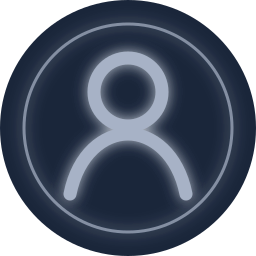

Ostéopathie structurelle et énergie musculaire
Rachis · Membres supérieurs · Membres inférieurs
Que voulez-vous faire ?
Rachis · Membres supérieurs · Membres inférieurs


Vidéos des techniques
Sélectionnez la zone du corps sur laquelle vous souhaitez travailler.
Choisissez une région

Sélectionnez une technique
Vidéo technique
Vues12
Complétion86%
Score moyen4,7 / 5
Cartes déjà vues
Les cartes sont tirées uniquement parmi les techniques déjà consultées.
Consolidez vos connaissances

Testez-vous avant de retourner voir la réponse.
Question 4 / 20
L’évaluation permet d’identifier la cause réelle de la dysfonction et d’adapter votre approche.
Suivi pédagogique
Vous progressez régulièrement sur les techniques déjà vues.
Rachis72%
Cervicales70%
Dorsales65%
Lombaires80%
Techniques sauvegardées
Compte étudiant
Parcours structurel et énergie musculaire